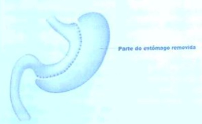
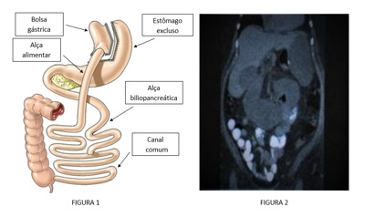

Questão 1 · Tratamento cirúrgico da obesidade · Complicações · Cirurgia · 4000120189Após cirurgia bariátrica de bypass gástrico em Y de Roux, frequentemente ocorre
A hiperuricosúria.
B hipocalciúria.
C hiperoxalúria.
D hipercitratúria.
E aumento do volume urinário.
Questão 2 · Comorbidades modif icáveis pela perda ponderal · Tratamento cirúrgico da obesidade · 4000119342Cirurgias Restritivas A cirurgia para obesidade tem indicações bem definidas, porém existem diversos procedimentos diferentes. Qual a rmação abaixo guia a indicação para o procedimento ou a técnica mais adequada?
A A gastrectomia vertical deve ser o procedimento de escolha em pacientes com diabetes, por ser a técnica mais simples e a cirurgia mais rápida, minimizando, assim, complicações operatórias.
B As operações disabsortivas puras são a preferência na atualidade, devido a maior taxa de perda ponderal.
C A indicação de cirurgia é baseada no índice de massa corpórea e presença de comorbidades associadas à obesidade e na distribuição de gordura periférica/central.
D Os pacientes candidatos as cirurgias devem ser avaliados para liberação para operação por equipe multidisciplinar composta de pelo menos: cirurgião geral ou do aparelho digestivo, endocrinologista, cardiologista, pneumologista, enfermeiro, psicólogo, fisioterapeuta e nutricionista.
Questão 3 · Complicações · Complicações · Causas de f erropenia · 4000118256Paciente 42 anos, sexo masculino, história pregressa de cirurgia de sleeve gástrico (gastrectomia vertical) há 2 anos, com perda ponderal de 45 kg no mesmo período de tempo, queixando-se de fadiga, intolerância ao exercício, sonolência. Ao exame físico, conjuntivas pálidas, unhas quebradiças em formato de colher. Laboratório: ferro sérico 35 mcg/dL (referência 65 a 175 mcg/dL) e ferritina 12 ng/ml (22,0 a 322,0 ng/mL). Com base no caso acima, qual a principal hipótese diagnóstica e o tratamento mais indicado?
A Anemia ferropênica por má absorção de ferro; tratamento: 120 a 180 mg/dia de ferro elementar, sendo de maior absorção o fumarato ferroso e gluconato ferroso em comparação ao sulfato ferroso.
B Anemia carencial por má absorção de riboflavina (vitamina B2); tratamento: multivitamínicos próprios para pacientes no pós-operatório de cirurgia bariátrica.
C Anemia de doença crônica pós-cirurgia bariátrica (cicatriz inflamatória por cirurgia bariátrica); tratamento: 120 a 180 mg/dia de ferro elementar e anti-inflamatório não esteroidal.
D Anemia ferropênica por má absorção de ferro; tratamento: ferripolimaltose (Noripurum®), 1 ampola intramuscular uma vez ao dia até melhora do quadro e vitamina C.
E Anemia carencial por má absorção de vitamina B12 e ácido fólico; tratamento: cianocobalamina 1.000 a 5.000 mcg intramuscular semanais por 4 semanas, depois doses mensais para manutenção.
Questão 4 · Tratamento cirúrgico da obesidade · Complicações · Cirurgia · 4000111340Mulher de 44 anos, no 3º dia de pós-operatório de gastroplastia em Y de Roux por videolaparoscopia para tratamento de obesidade mórbida (IMC 44 Kg/m²). Ao exame físico apresenta-se taquicárdica (frequência cardíaca: 140bpm), PA 140 x 85 mmHg, eupneica, murmúrios vesiculares diminuídos nas bases, abdome ácido sem sinais de irritação peritoneal. Exames laboratoriais: Hb: 13g/dL; Ht: 42%; Leucograma: 17,33mil/mm³; Creatinina: 1,5g/dL; Ureia: 78g/dL; PCR: 140g/dL. Qual é a principal hipótese diagnóstica e conduta?
A Hérnia interna (Petersen), laparoscopia.
B Atelectasia pulmonar, fisioterapia respiratória.
C Tromboembolismo pulmonar, anticoagulação terapêutica.
D Deiscência de anastomose, tomografia de abdome.
Questão 5 · Tratamento cirúrgico da obesidade · Bypass Gástrico em YdeRoux · Cirurgia · 4000107697A obesidade é uma das doenças mais estudadas nos dias de hoje e o tratamento cirúrgico pela Gastroplastia em Y de Roux é uma das suas principais técnicas. O aumento da saciedade e a diminuição da resistência periférica à insulina proporcionados por essa cirurgia são mediados por qual dos seguintes peptídeos?
A Leptina
B Gastrina
C GLP1
D Glucagon
Questão 6 · Tratamento cirúrgico da obesidade · Complicações · Cirurgia · 4000107666Mulher, 39 anos de idade, no 6º dia de pós-operatório de gastroplastia por obesidade mórbida (bypass gástrico em Y de Roux), procura atendimento com queixa de dor abdominal difusa há 2 dias, associada a febre aferida de 38ºC e náuseas. Sinais vitais: Pressão Arterial: 110 x 70 mmHg; frequência cardíaca: 105 batimentos /minuto; Temperatura Axilar: 38,2ºC; Saturação de Oxigênio: 95%, em ar ambiente, repouso. Ao exame físico, apresenta-se e REG, corada e hidratada. Abdome doloroso à palpação, sem sinais de peritonite. Dreno abdominal com débito de aspecto seroso. Assinale a alternativa correta:
A Não é necessário solicitar nenhum exame complementar; indicar laparotomia exploradora de emergência.
B Fazer teste com azul de metileno; caso seja negativo, afasta-se a possibilidade de fístula da anastomose.
C O teste de azul de metileno consiste na aplicação endovenosa deste corante e verificação de presença de extravasamento.
D A conduta indicada é solicitar tomografia de abdome e pelve, com contraste, por via oral e endovenosa.
Questão 7 · Tratamento cirúrgico da obesidade · Bypass Gástrico em YdeRoux · Cirurgia · 4000102897A imagem abaixo mostra uma cirurgia utilizada para o tratamento da obesidade mórbida. Esta cirurgia é:

A ByPass gástrico. Nesta técnica há redução na produção de grelina, aumento na produção de glucagon-1, resultando em redução do apetite, aumento na secreção de insulina e sensação de saciedade precoce.
B Técnica de Scopinaro. Nesta técnica há uma maior disabsorção de gorduras e carboidratos, melhorando a ação da insulina nos tecidos periféricos.
C Bipartição intestinal. Nesta técnica há redução na produção de grelina, aumento na produção de glucagon-1, resultando em redução do apetite, aumento na secreção de insulina e sensação de saciedade precoce.
D Bypass gástrico. Nesta técnica há exclusão do fundo gástrico, com diminuição da produção de colecistocinina, PYY e GIP. Estes hormônios interferem na sensação de saciedade e liberação de insulina no tecido periférico.
Questão 8 · Tratamento cirúrgico da obesidade · Complicações · Cirurgia · 4000102837Pacientes com mais de 5 anos de Bypass Gástrico (seguimento em longo prazo) para tratamento cirúrgico da obesidade revelam 15% a 20% de recidiva. A recidiva está estabelecida quando:
A Recuperação de mais de 5kg em 5 anos, com ou sem reaparecimento da(s) comorbidade(s).
B Reaparecimento de comorbidades com recuperação de 10% a 15% do peso perdido.
C Não há consenso na literatura médica quanto à definição de recidiva da obesidade.
D Houve recuperação de 50% do peso perdido ou recuperação de 20% do peso perdido associado ao reaparecimento da(s) comorbidade(s).
Questão 9 · Complicações dos Procedimentos Disabsortivos · Tratamento cirúrgico da obesidade · Complicações · 4000102735Pacientes submetidos a cirurgia bariátrica com realização de bypass jejunoileal apresentam constante esteatorreia e tendem a desenvolver litíase renal com predomínio de qual componente?
A Fosfato de cálcio
B Oxalato
C Cistina
D Ácido úrico
Questão 10 · Tratamento cirúrgico da obesidade · Bypass Gástrico em YdeRoux · Cirurgia · 4000101886Com relação ao tratamento operatório da obesidade mórbida, qual é a alternativa correta?
A “Bypass” gástrico em Y de Roux proporciona efeitos restritivos e desabsortivos.
B Gastrectomia vertical é indicada quando houver doença do refluxo gastro-esofágico.
C Hormônio grelina diminui após o “Bypass gástico” e aumenta após a Gastrectomia vertical.
D Índice de massa corpórea > 35 kg/m² consiste em indicação para o tratamento operatório independente de comorbidades.
E Gastrectomia vertical não tem indicação em índice de massa corpórea > 60 kg/m².
Questão 11 · Tratamento cirúrgico da obesidade · Bypass Gástrico em YdeRoux · Cirurgia · 4000099745Paciente do sexo masculino, IMC 50Kg/m², com hipertensão arterial sistêmica, diabetes melitus tipo 2 de difícil controle, dislipidemia, esteatose hepática grave além de re uxo gastroesofagico muito sintomático e esofagite erosiva complicada. Qual melhor opção cirúrgica para tratamento da obesidade e suas comorbidades?
A Gastroplastia redutora em Y de Roux.
B Gastrectomia vertical.
C Banda gástrica ajustável.
D Balão intragástrico.
E Gastrectomia redutora em Y de Roux. ida oib pr ed
Questão 12 · Tratamento cirúrgico da obesidade · Bypass Gástrico em YdeRoux · Cirurgia · 4000095581Uma mulher com 23 anos, obesa mórbida, é submetida à cirurgia bariátrica e no sexto dia pós-operatório apresenta taquicardia, febre e Ieucocitose. Refere dor abdominal em epigástrio e em ombro. E nega outras queixas. Qual o principal diagnóstico a ser pesquisado, Ievando-se em consideração o tempo de pós-operatório?
A Atelectasia pulmonar.
B Celulite.
C Fístula da gastroenteroanastomose.
D Infecção da ferida operatória.
E Pneumonia na base esquerda
Questão 13 · Tratamento cirúrgico da obesidade · Cirurgia · 4000077032Cirurgias Amplamente Restritivas Má Absorção Discreta A grelina é um hormônio envolvido no emagrecimento. Seu mecanismo de ação e tipo de relação, quanto às diferentes técnicas de cirurgia bariátrica, se comportam, respectivamente, como:
A anorexígeno que, na cirurgia de gastrectomia em manga, encontra-se aumentado às custas da gastrectomia (componente restritivo)
B anorexígeno que, na cirurgia de bypass gástrico, encontra-se aumentado às custas da alça longa do Y (componente disabsortivo)
C orexígeno que, na cirurgia de bypass gástrico, encontra-se diminuído às custas da alça longa do Y (componente disabsortivo)
D orexígeno que, na cirurgia de gastrectomia em manga, encontra-se diminuído às custas da gastrectomia (componente restritivo)
Questão 14 · Tratamento cirúrgico da obesidade · Cirurgia · 4000073714Cirurgias Amplamente Restritivas Má Absorção Discreta Entre as técnicas de cirurgia bariátrica citadas abaixo, a que tem como mecanismo de ação a indução de má absorção ampla é:
A Banda gástrica ajustável laparoscópica.
B Gastrectomia vertical laparoscópica.
C Bypass gástrico em Y de Roux.
D Derivação biliopancreática.
Questão 15 · Banda Gástrica Ajustável · Tratamento cirúrgico da obesidade · Cirurgia · 4000068530De todas as técnicas de cirurgia bariátricas autorizadas no Brasil de acordo com as normas do CFM, a técnica que é considerada basicamente restritiva e sem poder metabólico é:
A Gastrectomia vertical
B By-pass gástrico
C Duodenal switch
D Banda gástrica
E Cirurgia de Scopinaro
Questão 16 · Tratamento cirúrgico da obesidade · 4000067765Cirurgias Predominantemente Disabsortivas Má Absorção Intensa Discretamente Restritivas Sobre as técnicas de gastroplastia redutora, assinale a alternativa correta:
A By-pass Gástrico Laparoscópico em Y-de-Roux demonstrou-se em diversos relatos, a obtenção de perda de peso durável e prolongada como também remissão de doenças metabólicas com taxas de complicações altas.
B Desvio Laparoscópico Duodenal com Desvio Bilipancreático é, principalmente uma cirurgia disabsortiva que envolve a preservação do piloro gástrico e a criação e um curto “canal comum” ileal, de 100cm, que permite a mistura de alimentos e enzimas biliopancreáticas
C Gastrectomia Laparoscópica Vertical em Manga faz com que os níveis sérico de grelina aumentem e consequentemente diminuem a saciedade.
D O emagrecimento após a realização do desvio gástricos e do By-pass laparoscópico duodenal com desvio biliopancreático ocorre principalmente nos primeiros 12 a 18 meses pós operatórios e não chegam a 70 - 80% do excesso de peso.
E Dentre as indicações de cirurgia, pacientes com índice de massa corporal entre 35 e 40kg/m² não pode de maneira alguma serem submetidos ao tratamento cirúrgico.
Questão 17 · Tratamento Cirúrgico da Obesidade · Tratamento cirúrgico da obesidade · Complicações · 4000041614Na cirurgia bariátrica, a principal complicação fatal no período pós-operatório precoce, atualmente, é
A tromboembolismo pulmonar.
B fístula da anastomose gástrica.
C fístula da anastomose entérica.
D obstrução intestinal.
E infarto agudo do miocárdio.
Questão 18 · Tratamento cirúrgico da obesidade · Cirurgia · Gastrectomia Vertical Laparoscópica · 4000036036A gastrectomia vertical (GV) em manga (sleeve)
A baseia-se em mecanismo puramente restritivo mecânico.
B é o procedimento bariátrico mais eficiente e reversível, se necessário.
C é rápida, fácil e melhora o refluxo gastresofágico preexistente.
D consiste na retirada vertical da grande curvatura gástrica.
Questão 19 · Tratamento Cirúrgico da Obesidade · Cirurgia · Tratamento cirúrgico · 4000032068Paciente de 35 anos, feminino, com peso de 110kg e estatura de 1,70 procura serviço de cirurgia com interesse em submeter-se a procedimento bariátrico para induzir perda de peso. Sedentária. Ingesta de alimentos hipercalóricos. Relata transtorno de ansiedade sem acompanhamentos. Histórico familiar de neoplasia colorretal em familiares de 1°grau abaixo de 40 anos. Ultrassonogra a evidenciou esteatose hepática moderada. Endoscopia digestiva alta apresenta pólipos adenomatosos em grande curvatura de corpo gástrico e duodeno (todos ressecados). H. pylori positivo. Hipertensa em uso de diurético e inibidores da enzima conversora da angiotensina. Realizou polissonogra a que evidenciou despertares frequentes, roncos e períodos longos de apneia. Exames séricos não mostravam alterações. Espirometria sem distúrbios. O cirurgião emitiu guia para gastroplastia. Marque a correta:
A A indicação de Bypass gástrico é a melhor modalidade de gastroplastia para a paciente. Embora o paciente não tenha Índice de Massa Corpórea acima de 40, possui comorbidades que, associada à obesidade, preenchem todos os critérios para o procedimento. A conduta do cirurgião está acertada.
B A indicação de Sleeve (Gastrectomia Vertical) é a melhor modalidade de gastroplastia para a paciente. Embora o paciente não tenha Indice de Massa Corpórea acima de 40, possui comorbidades que, associada à obesidade, preenchem todos os critérios para o procedimento. A conduta do cirurgião está acertada.
C O paciente obeso com proposta de gastroplastia possui particularidades que geram a necessidade de avaliação de outros profissionais. Os mesmos acompanham no pré e pós- operatório. Por isso a conduta do cirurgião foi incorreta, pois ao invés de emitir a guia ele deveria encaminhá-los a cardiologia, pneumologia e anestesiologia, conforme recomendação da normativa do Conselho Federal de Medicina.
D O histórico pessoal de pólipos e familiar de neoplasia colorretal são critérios que influenciam na escolha da modalidade cirúrgica. A presença de H.pylori indica tratamento e comprovação de erradicação no pré- operatório. A paciente não preenche todos os critérios para gastroplastia.
Questão 20 · Complicações · Cirurgia · Tratamento cirúrgico · 4000031736Paciente internada com história de etilismo e desnutrição grave (IMC=16), encontra-se em pós-operatório tardio de cirurgia bariátrica tipo Capella (4 anos). Apresenta vômitos recorrentes, alopecia, fadiga e glossite. Após introdução de dieta enteral hipercalórica e hiperprotêica evolui com taquicardia, ritmo de galope, turgência jugular, edema de membros inferiores, dispneia aos pequenos esforços, tremor de extremidades, alteração de propriocepção com di culdade de marcha, oftalmoplegia e nistagmo. O diagnóstico provável é:
A Deficiência de selênio
B Deficiência de vitamina B1
C Deficiência de ácido fólico
D Deficiência de cromo
Questão 21 · Complicações dos Procedimentos Disabsortivos · Bypass Gástrico em YdeRoux · Cirurgia · 4000031619A terapia clínica para a obesidade grave tem sucesso limitado a curto prazo e quase inexistente a longo prazo. Quando uma pessoa está gravemente obesa, estima-se que a probabilidade de que ela perca peso su ciente apenas através da dieta e permaneça com um IMC inferior a 35 kg/m2 seja de 3% ou menos, destacando a importância do tratamento cirúrgico da obesidade grave. Com relação ao tratamento cirúrgico da obesidade, marque a alternativa CORRETA:
A Portadores da Síndrome de Pickwick apresentam medida de Paco2 menor que a Pao2 na gasometria arterial, associado a um aumento na pressão da artéria pulmonar.
B As cirurgias bariátricas laparoscópicas possuem menores taxas de infecções de feridas, hérnias incisionais e complicações tromboembólicas, se comparadas às cirurgias bariátricas por via aberta; não há, entretanto, diferença significativa nas taxas de mortalidade entre as cirurgias bariátricas abertas ou laparoscópicas.
C Algumas vantagens de gastrectomia vertical incluem a preservação do piloro (evitando dumping e a redução dos níveis de grelina, além de redução na incidência de hérnias internas e dos casos de má absorção, se comparada ao Bypass Gástrico em Y de Roux.
D A complicação mais significativa e específica observada depois da cirurgia de derivação biliopancreática para tratamento da obesidade é a desnutrição proteica grave, sendo necessária a reversão cirúrgica do desvio intestinal na maioria dos pacientes.
Revisar: possível letra faltando em enunciado
Questão 22 · Bypass Gástrico em YdeRoux · Cirurgia · Tratamento cirúrgico · 4000030238O Sleeve gástrico e o Bypass gástrico com reconstrução em Y de Roux podem ser indicados para o tratamento da obesidade e suas comorbidades associadas. Em relação ao manejo e indicações cirúrgicas, assinale a assertiva CORRETA:
A O Sleeve gástrico não envolve desvios do trânsito intestinal, como do arco duodenal e jejuno proximal no Bypass gástrico, portanto, não se justifica a reposição de micronutrientes no pós-operatório.
B Em pacientes com índice de Massa Corpórea (IMC entre 40 e 50 kg/m² portadores de diabetes melitus e hipertensão arterial sistêmica não se recomenda o emprego do Sleeve gástrico no tratamento da obesidade.
C O emprego do Sleeve gástrico como primeira opção cirúrgica em pacientes obesos candidatos à cirurgia bariátrica inviabiliza a possibilidade de realizar o Bypass gástrico numa eventual reabordagem cirúrgica.
D O Bypass gástrico com reconstrução em Y de Roux pode ser empregado em alguns pacientes com diabetes melitus com índice de Massa Corpórea (IMC entre 30 e 35 kg/m² como cirurgia metabólica.
Questão 23 · Complicações · Cirurgia · Tratamento cirúrgico · 4000029899Paciente de 25 anos, que foi submetido a cirurgia bariátrica pela técnica do Bypass Gástrico, apresenta relato de sudorese súbita, taquicardia e fadiga extrema após ingestão de alimentos doces. Qual é o provável diagnóstico?
A Deficiência de vitamina B12.
B Deficiência de cálcio.
C Síndrome de Dumping.
D Síndrome de Stevens-Johnson.
E Hipoproteinemia.
Questão 24 · Tratamento Cirúrgico da Obesidade · Tratamento cirúrgico da obesidade · 4000028854Pacientes candidatos à cirurgia bariátrica Assinale a alternativa correta com relação à cirurgia bariátrica e metabólica:
A Está indicada apenas para pacientes com obesidade grau 3.
B Baseia-se fundamentalmente em técnicas restritivas, já que as absortivas trazem efeitos colaterais intoleráveis.
C Pode levar à melhora dos níveis glicêmicos não só devido à perda de peso, mas também pela liberação precoce de incretinas.
D Está contraindicada para pacientes portadores do Helicobacter pylori.
Questão 25 · Cirurgia · Tratamento cirúrgico · Gastrectomia Vertical Laparoscópica · 4000026533Em relação ao tratamento cirúrgico para obesidade mórbida pela técnica de Gastrectomia Vertical ("Sleeve"), assinale a alternativa CORRETA:
A Por ser exclusivamente restritiva, não apresenta alterações nutricionais no pós-operatório.
B Tem resultado semelhante ao da banda gástrica por apresentar desvio intestinal.
C Apresentam risco aumentado para formação de hérnias internas do que Bypass gástrico.
D Fístulas ocorrem com mais frequência no ângulo de His.
E Está contra-indicada em superobesos.
Questão 26 · Bypass Gástrico em YdeRoux · Cirurgia · Tratamento cirúrgico · 4000026278A cirurgia bariátrica é uma importante ferramenta no tratamento da obesidade refratária a tratamentos clínicos e farmacológicos. Os candidatos à cirurgia devem apresentar critérios bem definidos e confirmarem uma mudança no estilo de vida para que esta ferramenta seja bem utilizada. Sobre a obesidade e cirurgia bariátrica responda:
A Em paciente diabéticos a cirurgia de Capella é uma boa opção pois reduz os níveis circulantes de GLP 1 e aumenta os níveis de grelina.
B Em paciente diabéticos a cirurgia de Capella é uma boa opção pois aumenta os níveis circulantes de GLP 1 e reduz os níveis de grelina.
C Pacientes com sobrepeso são candidatos à cirurgia de Capella.
D A cirurgia de Sleeve está contraindicada nos EUA.
Questão 27 · Tratamento cirúrgico da obesidade · Complicações · Bypass Gástrico em YdeRoux · 4000022850Após realização de By Pass gástrico para tratamento de obesidade mórbida, qual das vitaminas abaixo deve ser suplementada e qual a repercussão disso?
A Vitamina B12 - anemia megalobástrica
B Vitamina K - diatese hemorrágica
C Vitamina C - anemia microcitica
D Vitamina D - osteoporose
Questão 28 · Tratamento cirúrgico da obesidade · Bypass Gástrico em YdeRoux · Cirurgia · 4000022114A.I.M.O., 60 anos; sexo feminino, índice de massa corporal (IMC) 36 kg/m²; em tratamento clínico da obesidade atestado pela endocrinologista há 10 anos. Hipertensa, Diabética tipo 2, portadora de síndrome da apneia obstrutiva do sono (SAHOS), dislipidemia e doença do re uxo gastro-esofágica (DRGE). Realiza tratamento farmacológico com rosuvastatina, metformina, losartana, hidroclorotiazida, esomeprazol, além do CPAP noturno. Exames de rotina recentes: ultrassonogra a abdominal evidenciando esteatose hepática grau II e colecistopatia litiásica (vesícula biliar parede na repleta de cálculos); endoscopia digestiva alta com relato de esofagite grau C de Los Angeles. Glicose em jejum 160 mg/dl, Insulina 42 mU/l, hemoglobina glicada 7,9%, colesterol total 244 mg/dl e triglicérides 280 mg/dl. Será submetida ao tratamento cirúrgico da obesidade/síndrome metabólica. Dentre as afirmativas abaixo, assinale a opção CORRETA:
A a gastrectomia vertical/sleeve (GV) é a melhor indicação, uma vez que apresenta melhores resultados no tratamento da síndrome metabólica, quando comparada aos resultados do bypass gástrico em Y de Roux (BGYR).
B a GV é a melhor indicação, uma vez que a ressecção do fundo e a tunelização do corpo gástrico permitem o tratamento efetivo da DRGE.
C deve ser indicado o BGYR por apresentar o tratamento efetivo da obesidade e síndrome metabólica assim como da DRGE.
D por se tratar de uma paciente de risco, procedimento menos invasivo como a Banda Gástrica Ajustável, feita por videolaparoscopia é a melhor opção.
E ambas as técnicas (GV e BGYR) seriam bem indicadas, haja vista a equivalência dos resultados no tratamento da síndrome metabólica e DRGE nos pacientes com obesidade grau 2.
Questão 29 · Tratamento cirúrgico da obesidade · Bypass Gástrico em YdeRoux · Cirurgia · 4000021578Sobre a doença do refluxo gastroesofágico (DRGE) e a obesidade, podemos afirmar, EXCETO:
A A obesidade atua como fator de risco para a DRGE, tanto por interferir no funcionamento do esfíncter esofageano inferior quanto pelo aumento da pressão intra-abdominal.
B Atualmente a DRGE é considerada comorbidade associada/agravada pela obesidade, podendo vir a indicar cirurgia bariátrica quando paciente tiver IMC acima de 35.
C Os pacientes obesos, com IMC acima de 35 e refratários ao tratamento da DRGE com IBP, têm a opção da fundoplicatura gástrica com válvula total (Nissen como indicação terapêutica pertinente e com bons resultados na remissão dos sintomas.
D os pacientes com obesidade severa (IMC>40 e DRGE têm na cirurgia bariátrica o melhor aliado para tratamento das duas doenças e o Bypass Gástrico em Y de Roux tem sido a técnica mais adequada nestes pacientes, quando comparada ao Sleeve (gastrectomia vertical.
E Tanto a obesidade quanto a DRGE atuam como fatores de risco para o adenocarcinoma de esôfago.
Questão 30 · Complicações · Bypass Gástrico em YdeRoux · Cirurgia · 4000014574Paciente de 57 anos com queixa de sensação de plenitude epigástrica, náuseas, vômitos, cólica abdominal e diarreia, associados à sudorese intensa e palidez que ocorre após a alimentação. Relata história de ter realizado cirurgia de Fobi e Capella há seis meses. Diante desse quadro, qual a sua principal hipótese diagnóstica?
A Síndrome de “dumping” precoce.
B Síndrome de “dumping” tardio.
C Gastrite de refluxo alcalino.
D Síndrome da alça aferente.
E Disfagia pós-vagotomia.
Questão 31 · Cirurgia · Gastrectomia Vertical Laparoscópica · 4000007148Deve-se evitar a gastrectomia vertical no segmento de cirurgia da obesidade nos seguintes casos:
A Doença de refluxo gastro-esofágico e esofagite erosiva.
B Pacientes com índice de massa corpórea > 40.
C Pacientes hipertensos em uso de bloqueador de canal de cálcio.
D Não há contraindicações para gastrectomia vertical.
Questão 32 · Cirurgia · Tratamento cirúrgico · Gastrectomia Vertical Laparoscópica · 4000006520A obesidade tem se tornado um problema de saúde que atinge a cada dia mais pessoas, e dentre as inúmeras opções de tratamento, está a modalidade cirúrgica. Qual das técnicas cirúrgicas para tratamento da obesidade está representada abaixo?

A Bypass gástrico
B Fobi Capella
C Gastrectomia total
D Gastrectomia vertical Sleeve
Questão 33 · Cirurgia · Tratamento cirúrgico · Gastrectomia Vertical Laparoscópica · 4000003268Deve-se evitar a gastrectomia vertical no segmento de cirurgia da obesidade nos seguintes casos:
A Doença de refluxo gastro-esofágico e esofagite erosiva.
B Pacientes com índice de massa corpórea > 40.
C Pacientes hipertensos em uso de bloqueador de canal de cálcio.
D Não há contraindicações para gastrectomia vertical.
Questão 34 · Tratamento cirúrgico da obesidade · Complicações · Cirurgia · 4000101575Mulher de 37 anos, que foi submetida à operação de derivação gástrica, por videolaparosocopia, há 7 meses, com perda de 42 kg neste período, apresenta episódios recorrentes de dor epigástrica tipo cólica, com irradiação ocasional para a região retroesternal, não relacionada com alimentação, e que apresenta melhora espontânea, sem outros sintomas associados. Há cerca de 8 horas, iniciou novo episódio álgico que a fez procurar atendimento emergencial, onde os exames laboratoriais foram normais. A tomogra a computadorizada do abdome mostrou ausência de pneumoperitônio ou coleções líquidas. No entanto, foi notada a presença de volumosa distensão do estômago excluso, duodeno e jejuno proximal. A hipótese de diagnóstico mais provável é:
A Síndrome de “Dumping”.
B Síndrome da alça eferente.
C Úlcera de boca anastomótica.
D Hérnia interna pelo espaço de Petersen.
Questão 35 · Comorbidades modif icáveis pela perda ponderal · Cirurgia Bariátrica e Metabólica · 4000096862Pacientes candidatos à cirurgia bariátrica Mulher de 47 anos, obesa há 22 anos, com muitas tentativas de tratamento medicamentoso e dieta para redução do peso sem sucesso. Apresenta diabetes mellitus medicada com insulina há 8 anos. Atingiu o IMC de 39 kg/m², sendo indicado o tratamento cirúrgico. Durante o preparo pré-operatório com orientação nutricional perdeu peso e chegou ao IMC atual de 34 kg/m². A conduta recomendada neste caso é:
A Manter a indicação do tratamento cirúrgico com o desvio gástrico em y de Roux.
B Suspender o tratamento clínico com insulina e quando recuperar o peso inicial indicar a gastrectomia vertical.
C Aconselhar ganho de peso para atingir IMC elegível ao tratamento cirúrgico.
D Paciente sem indicação de cirurgia bariátrica nesse momento orientada a procurar o endocrinologista.
E N.d.a.
Questão 36 · Cirurgia Bariátrica e Metabólica · Pacientes candidatos à cirurgia bariátrica · 4000073382Pacientes com índice de massa corporal maior que 60 kg/m₃, com fáscies pletóricas e síndrome de hipoventilação devem ser submetidos ao(a):
A gastroplastia do tipo biliopancreática
B perda ponderal antes da bariátrica
C tratamento psiquiátrico
D gastrectomia vertical
Questão 37 · Tratamento cirúrgico da obesidade · Cirurgia · Gastrectomia Vertical Laparoscópica · 4000065403O tratamento cirúrgico da obesidade mórbida utiliza técnicas restritivas, disabsortivas ou mistas. Dentre as opções abaixo a que possui apenas o mecanismo restritivo é a (o):
A derivação biliopancreática.
B Switch duodenal.
C Gastrectomia vertical.
D Derivação gástrica em "Y" de Roux.
E Interposição ileal.
Questão 38 · Cirurgias amplamente restritivas má absorção discreta · Cirurgia · 4000054706Cirurgias Amplamente Restritivas Má Absorção Discreta Qual é o nome do hormônio responsável por estimular o apetite (orexigênico) que se encontra diminuído no paciente submetido a gastroplastia com derivação gastrojejunal para tratamento da obesidade mórbida?
A Hormônio do crescimento.
B Insulina.
C Colecistoquinina.
D Grelina.
E Glucagon.
Questão 39 · Tratamento cirúrgico da obesidade · Complicações · Cirurgia · 4000052086As causas de mortalidade no by-pass gástrico em Y de Roux variam de acordo com múltiplos estudos. Incluem embolia pulmonar, deiscência de anastomose, abscessos intra-abdominais. De acordo com os resultados destes estudos, marque a CORRETA.
A O sexo feminino está associado a uma maior morbidade e mortalidade.
B As taxas de mortalidade não são influenciadas pela seleção de pacientes.
C O acesso laparoscópico piora a morbidade pós-operatória quando comparado ao acesso convencional laparotômico a céu aberto.
D A obstrução intestinal é complicação potencialmente fatal e pode ocorrer a qualquer tempo nos pacientes submetidos ao by-pass gástrico em Y de Roux.
E As complicações metabólicas mais comuns no longo prazo de pacientes submetidos ao by-pass gástrico em Y de Roux são as deficiências de magnésio e vitamina B12.
Questão 40 · Tratamento cirúrgico da obesidade · Complicações · Cirurgia · 4000039149Paciente sexo feminino, 40 anos, com IMC de 38,5kg/m², diabética não insulino dependente, hipertensa com bom controle clínico, foi submetida à derivação gástrica em Y de Roux (by-pass gástrico) por videolaparoscopia. Retorna ao pronto atendimento do hospital com queixa de dispneia e relato de febre no 6° dia pós-operatório. Ao exame clínico apresenta-se taquicárdica 132bpm, taquipneica 32irpm, PA: 150 x 100mmHg, ausculta respiratória com murmúrio vesicular discretamente reduzido na base esquerda, palpação do abdome dolorosa difusamente, porém sem irritação peritoneal franca, temperatura axilar 38,7°C. Diante do quadro descrito, assinale a alternativa que apresenta a PRINCIPAL hipótese diagnóstica e o exame a ser realizado para esclarecer o diagnóstico.
A Deiscência de sutura com peritonite e tomografia abdominal com contraste oral.
B Atelectasia pulmonar e tomografia de tórax.
C Sem hipótese e tomografia de tórax e abdome com contraste venoso.
D Descompensação do diabete e glicemia venosa.
Questão 41 · Tratamento cirúrgico da obesidade · Cirurgia · 4000031515Cirurgias Amplamente Restritivas Má Absorção Discreta O Bypass gástrico e o Sleeve gástrico são técnicas cirúrgicas empregadas para o tratamento da obesidade, marque "V" para verdadeiro e "F" para falso. ( ) O Bypass gástrico e o Sleeve gástrico podem ser empregados para o tratamento de pacientes com índice de massa corpórea maior que 40 kg/m². ( ) O mecanismo pelo qual o Bypass gástrico pode determinar a remissão parcial ou completa do diabetes mellitus envolve alterações nos níveis plasmáticos das incretinas como a redução dos níveis séricos do glucagon like peptide (GLP-1). ( ) A redução do apetite é um achado comum no pós- operatório do Bypass gástrico e Sleeve gástrico, essa alteração é determinada essencialmente pela persistente elevação dos níveis séricos da grelina. ( ) A técnica cirúrgica do Sleeve gástrico envolve a realização de uma gastrectomia vertical, após desvascularização da grande curvatura do estômago e ausência de desvios intestinais, portanto, con figura-se como um método essencialmente restritivo. Assinale a sequência CORRETA.
A V - F - F - V
B F - F - F - V
C V - F - V - F
D F - F - V - V
Questão 42 · Cirurgia · Tratamento cirúrgico · Gastrectomia Vertical Laparoscópica · 4000026979Uma das técnicas cirúrgicas para tratamento da obesidade grau 3 é a gastrectomia vertical ou sleeve. Esta cirurgia tem efeito restritivo além do efeito anorexígeno que ocorre pela diminuição de um hormônio produzido no fundo gástrico. Qual é esse hormônio?
A Peptídeo YY.
B GLP-1.
C Grelina.
D Gastrina.
Questão 43 · Tratamento cirúrgico da obesidade · Complicações · Bypass Gástrico em YdeRoux · 4000021569Paciente submetido à cirurgia bariátrica à Fobi-Capella deu entrada no pronto- socorro com taquicardia, sudorese, lipotimia e desconforto abdominal que evoluiu com diarreia explosiva alguns minutos após de ter feito ingesta de bolo de chocolate em moderada quantidade. Qual o provável diagnóstico?
A Impactação alimentar.
B Síndrome de Dumping.
C Úlcera de anastomose.
D Síndrome da alça aferente.
Questão 44 · Tratamento cirúrgico da obesidade · Complicações · Bypass Gástrico em YdeRoux · 4000020555Paciente de 32 anos, feminina, submetida a gastroplastia redutora em Y de Roux videolaparoscópica(bypass) há 6 meses, apresenta dor em Hipocôndrio esquerdo há cerca de 8 dias, que piora após se alimentar, apresentando também náuseas mas relata que "não consegue vomitar". Nega disfagia. Relata piora da dor há 4 horas, sem febre ou icterícia, dando entrada no PS com PA 120/70mmHg, corada, Hb 12,1 leucócitos totais 9700 sem desvio, satO2 de 98% em ar ambiente. Foi realizada Radiogra a de abdome agudo evidenciando distensão de alças isoladamente em hipocôndrio esquerdo e aparente distensão do estômago excluso. Qual a principal hipótese diagnóstica?
A Litíase biliar
B Hérnia de Petersen
C Isquemia intestinal
D Estenose da gastroenteroanastomose
E Úlcera marginal na anastomose gastro-jejunal
Questão 45 · Cirurgia · Cirurgias Amplamente Restritivas Má Absorção Discreta · Tratamento cirúrgico · 4000017272P.A.O., 48 anos; sexo masculino, Índice de Massa Corporal (IMC) 35,9 kg/m²; diagnosticado com síndrome metabólica há 5 anos durante internação devido infecção urinária. Desde então faz seguimento clínico com endocrinologista, cardiologista e nutricionista, além de tratamento farmacológico com metformina, glibenclamida, losartana, anlodipino, hidroclorotiazida, rosuvastatina. Exames de rotina recentes: ultrassonogra a abdominal evidenciando esteatose hepática grau III; endoscopia digestiva alta com relado de cárdia alargado, junção esofagogástrica a 3 cm do pinçamento diafragmático e esofagite grau B de Los Angeles. Glicose em jejum 220 mg/dl, Insulina 42 mU/l, hemoglobina glicada 8,4%, colesterol total 284 mg/dl e trigliceres 320 mg/dl. Foi encaminhado pela endocrinologista ao cirurgião para avaliação quanto tratamento cirúrgico da obesidade/síndrome metabólica. Dentre as afirmativas abaixo, assinale a opção CORRETA:
A A cirurgia deve ser contraindicada, uma vez que pacientes portadores de obesidade grau I não preenchem os critérios cirúrgicos estipulados pela portaria 424 do Ministério da Saúde, publicada em 19/03/2013.
B A gastrectomia vertical/sleeve é a melhor indicação, por se tratar de uma técnica disabsortiva com ótimo resultado no tratamento da síndrome metabólica.
C Deve ser indicado o by-pass gástrico em Y de Roux, por se tratar de uma técnica mista (restritiva e disabsortiva) com ação incretínica, proporcionando, além da perda ponderal, o controle da síndrome metabólica.
D A gastrectomia vertical/sleeve é a melhor indicação, por se tratar de uma técnica restritiva com ótimo resultado no tratamento da obesidade e síndrome metabólica.
E O by-pass gástrico em Y de Roux, é a melhor opção, por se tratar de uma técnica restritiva e com baixo efeito incretínico.
Questão 46 · Complicações · Cirurgia · Cirurgias Amplamente Restritivas Má Absorção Discreta · 4000017073Uma mulher de 43 anos foi submetida a by-pass gástrico há 8 meses para tratamento de obesidade mórbida. Desde a cirurgia, a paciente vem realizando atividades físicas noturnas, como musculação e corridas matinais 4 vezes por semana e já perdeu 32 kg (peso inicial 90 kg). Não está tomando medicações. Há cerca de 3 semanas, ela tem notado episódios de náuseas, dor abdominal em cólicas, diarreia, palpitações, tonturas e sudorese profusa pós-alimentares, motivando a necessidade de antecipação de uma consulta de retorno ambulatorial. Qual o diagnóstico provável?
A Deficiência de ferro.
B Síndrome de dumping.
C Deficiência de tiamina.
D Desnutrição calórico-proteica.
Questão 47 · Complicações dos Procedimentos Disabsortivos · Encef alopatia de WernickeKorsakof f · 4000127520Tratamento cirúrgico da obesidade Um paciente de 42 anos, com antecedentes de ter feito cirurgia de duodenal switch há 8 anos, é levado ao pronto-socorro devido a quadro de cólica abdominal de fraca intensidade, mal-estar, confusão mental, desequilíbrio e fraqueza. Os familiares dizem que ele não faz seguimento há mais de 3 anos e que frequentemente tem vômitos, por comer muito rápido. Está em regular estado geral e descorado. Pulso: 80 bpm, PA: 120 × 80 mmHg, frequência respiratória: 14 irpm. O abdome é flácido e indolor. Tratamento para o provável diagnóstico que explica os sintomas apresentados:
A Hidratação intravenosa.
B Laparoscopia.
C Tiamina intramuscular.
D Ferro intravenoso.
E Antibiótico.
Questão 48 · Tratamento cirúrgico da obesidade · 4000125348Cirurgias Predominantemente Disabsortivas Má Absorção Intensa Discretamente Restritivas Qual o procedimento bariátrico mais mal absortivo?
A Balão intragástrico.
B Banda gástrica ajustável.
C Cirurgia biliopancreática.
D By-pass gástrico em Y-Roux.
E Gastrectomia vertical.
Questão 49 · Tratamento cirúrgico da obesidade · Bypass Gástrico em YdeRoux · Cirurgia · 4000124473Gastrectomia vertical (sleeve gastrectomy) e gastroplastia com derivação intestinal (by-pass gástrico em y de Roux) são as duas técnicas para cirurgia bariátrica mais utilizadas atualmente, e o cirurgião deverá decidir com o paciente que técnica empregar. Das considerações abaixo, qual está CORRETA e deve ser levada em conta na decisão?
A Sleeve gastrectomy, por ser apenas restritiva, não tem efeito metabólico significativo, não devendo ser proposta para pacientes diabéticos.
B Sleeve gastrectomy pode necessitar ser convertida em by-pass gástrico em decorrência de refluxo gastroesofágico intratável no pós-operatório.
C Sleeve gastrectomy não apresenta risco de ocorrência de fístulas por não ter anastomoses.
D Sleeve gastrectomy já é a técnica mais empregada nos Estados Unidos, devendo ser a primeira opção a ser oferecida aos pacientes.
E By-pass gástrico é uma cirurgia irreversível, e o paciente deve estar ciente disso.
Revisar: possível letra faltando em alt E
Questão 50 · Tratamento cirúrgico da obesidade · Tratamento Cirúrgico da DRGE · Bypass Gástrico em YdeRoux · 4000120599Um paciente de 29 anos de idade relata aumento de peso de 15 kg nos últimos três anos e episódios recorrentes de pirose nesse período, que melhoram parcialmente com o uso de inibidor de bomba de prótons. Realizou endoscopia digestiva alta, que mostrou esofagite erosiva Los Angeles B. Apresenta índice de massa corpórea de 47. Com base nesse caso hipotético, assinale a alternativa que apresenta a técnica indicada para o tratamento da obesidade do paciente com resultado mais duradouro.
A By-pass em y de Roux (Cappela).
B Gastrectomia parcial com reconstrução à Billroth II.
C Gastrectomia vertical (Sleeve).
D Banda gástrica.
E Balão gástrico.
Questão 51 · Tratamento cirúrgico da obesidade · Complicações · Cirurgia · 4000104957Paciente foi submetido, há 2 anos, à derivação gástrica em "y de Roux", para tratamento da obesidade (figura 1). Evoluiu com dor em cólica no hipocôndrio esquerdo, geralmente relacionada à alimentação, distensão abdominal leve, intermitente, que alivia com diarreia esverdeada. Negava febre, queda do estado geral, vômitos ou parada de eliminação de atos ou fezes. Foi submetido a tomogra a computadorizada com duplo contraste (endovenoso e via oral), apresentado na figura 2. Qual o diagnóstico mais provável?

A Obstrução da alça comum.
B Fístula do reservatório gástrico e abscesso intracavitário.
C Obstrução da alça biliopancreática.
D Obstrução da anastomose gastrojejunal.
Questão 52 · Tratamento cirúrgico da obesidade · Complicações · Cirurgia · 4000104422As complicações metabólicas mais comuns do Bypass Gástrico com Y de Roux a longo prazo são:
A Deficiência de Vitamina B6 e Vitamina D.
B Deficiência de Ferro e Deficiência de Vitamina B12.
C Deficiência de Ferro e Deficiência de Vitamina K.
D Deficiência de Vitamina B e Deficiência de Folato.
Questão 53 · Tratamento cirúrgico da obesidade · Complicações · Cirurgia · 4000103794Mulher de 40 anos fez trombose venosa profunda (TVP) no primeiro dia após cirurgia de gastroplastia em Y de Roux. No dia seguinte da TVP, precisou ser reabordada por deiscência da sutura lateral do estômago excluso. A paciente evoluiu bem e, após alta hospitalar, apresentou taquicardia, cefaleia e diarreia depois da alimentação. Esses sintomas são consequência do(a):
A gastrectomia
B tamanho do bypass
C anastomose gastrojejunal
D anastomose jejunojejunal
Questão 54 · Tratamento cirúrgico da obesidade · 4000077304Cirurgias Predominantemente Disabsortivas Má Absorção Intensa Discretamente Restritivas A cirurgia para a obesidade é uma das formas terapêuticas encontradas para pacientes obesos que são criteriosamente avaliados e selecionados. Assim, das opções abaixo, aquela que NÃO está em concordância com os conhecimentos atuais sobre este tema é:
A Dentre as condições clínicas associadas à obesidade grave, podem-se encontrar: miocardiopatia, diabetes do tipo II, osteoartrite, irregularidades menstruais e apneia obstrutiva do sono.
B O procedimento de Scopinaro é também conhecido como a realização da derivação gástrica em y de Roux.
C As indicações para a cirurgia bariátrica são, entre outras, Índice de Massa Corporal (IMC) > 40 kg/m² ou IMC > 35 kg/m² com comorbidade clínica associada, agravada pela obesidade.
D A derivação gástrica com y de Roux realizada por cirurgia aberta proporciona perda de peso em mais de 65% em um ano, e a resolução das comorbidades foi considerada excelente.
E O desvio biliopancreático, na maioria dos pacientes, apresenta uma “síndrome pós- alimentar ”, imediatamente após a operação, e é resolvida durante o primeiro ano.
Questão 55 · Complicações · 4000070672As de ciências de ferro e vitamina B12 em pacientes submetidas à cirurgia para tratamento da obesidade mórbida são complicações, principalmente da seguinte técnica cirúrgica:
A Banda gástrica ajustável
B Derivação gástrica em Y de Roux
C Desvio biliopancreático
D Gastrectomia vertical
Questão 56 · Tratamento cirúrgico da obesidade · 4000066523Cirurgias Predominantemente Disabsortivas Má Absorção Intensa Discretamente Restritivas A desnutrição proteica é a complicação mais significativa e específica de qual técnica de cirurgia bariátrica?
A Gastrectomia tipo Sleeve.
B By-pass gástrico.
C Desvio biliopancreático.
D Banda gástrica ajustável laparoscópia.
E Desvio biliopancreático com derivação duodenal.
Questão 57 · Banda Gástrica Ajustável · Tratamento cirúrgico da obesidade · 4000064531Cirurgias Predominantemente Disabsortivas Má Absorção Intensa Discretamente Restritivas São técnicas cirúrgicas aceitas para o tratamento da obesidade mórbida, EXCETO:
A Gastroplastia com by-pass gastrojejunal em y de Roux.
B By-pass jejuno-ileal.
C Gastrectomia vertical – Sleeve.
D Duodenal switch.
E Banda gástrica ajustável.
Questão 58 · Tratamento Cirúrgico da Obesidade · Tratamento cirúrgico da obesidade · 4000055580Cirurgias Predominantemente Disabsortivas Má Absorção Intensa Discretamente Restritivas A obesidade é uma condição complexa de dimensões biológicas, sociais e psicossociais, podendo afetar indivíduos de todas as idades. Com relação a obesidade e as cirurgias bariátricas, assinale a alternativa correta:
A As cirurgias do tipo Gastroplastia tipo Mason e Gastrectomia em manga laparoscópica são consideradas cirurgias do tipo disabsortivas.
B Dentre as indicações de cirurgia para obesidade morbidade, todo paciente com Índice de Massa Corporal (IMC) maior que 35 possui indicação cirúrgica.
C As cirurgias disabsortivas caracterizam-se pela diminuição da capacidade de armazenamento do estômago, fazendo com que o paciente coma menos.
D A obesidade é fator de risco para apneia obstrutiva do sono, sendo que quando presente, esses pacientes devem ser tratados com ventilação não invasiva com pressão positiva.
E A obesidade grau III ou mórbida é quando o paciente apresenta IMC maior que 35.
Questão 59 · Cirurgia · Tratamento cirúrgico · Gastrectomia Vertical Laparoscópica · 4000027714A gastrectomia vertical é uma nova técnica cirúrgica que vem sendo adotada como tratamento definitivo para a obesidade em muitas instituições, sendo atualmente a técnica que mais cresce em número e percentual em relação a totalidade das cirurgias bariátricas realizadas ao redor do planeta. De maneira geral, o mecanismo de ação na obesidade pela técnica de gastrectomia vertical PODE ser representado por:
A Mecanismo estritamente restritivo.
B Diminuição do tempo de esvaziamento gástrico.
C Mecanismo restritivo e desabsortivo.
D Restrição de ingesta calórica e efeitos hormonais.
Questão 60 · Bypass Gástrico em YdeRoux · Cirurgia · Cirurgias Amplamente Restritivas Má Absorção Discreta · 4000020251G.H.T., 45 anos, obeso grau III com índice de massa corporal de 48.8, diabético há 05 anos mal controlado com insulina NPH. Possui outras doenças associadas como hipertensão arterial e doença do re uxo gastroesofágico. Qual a opção operatória mais apropriada para o doente em questão?
A Gastrectomia vertical com interposição ileal.
B Bypass gástrico em Y-de-Roux.
C Gastrectomia vertical.
D Banda gástrica ajustável.
Questão 61 · Bypass Gástrico em YdeRoux · Cirurgia · Tratamento cirúrgico · 4000020227Na operação de bypass gástrico em Y-de-Roux a complicação operatória tardia mais preocupante e ameaçadora à vida do paciente é:
A Fístula gastrogástrica.
B Trombose do sistema mesentérico.
C Tromboembolismo pulmonar.
D Obstrução intestinal.
Questão 62 · Bypass Gástrico em YdeRoux · Cirurgia · Cirurgias Amplamente Restritivas Má Absorção Discreta · 4000020214Os resultados de perda de peso a longo prazo, o acesso videocirúrgico, a redução do índice de complicações e o controle de diversas doenças associadas à obesidade mórbida fez com que a Cirurgia Bariátrica se popularizasse, sendo atualmente um dos procedimentos mais realizados na cirurgia digestiva. Dentre as técnica abaixo, assinale a que atualmente é a mais realizada mundialmente:
A Bypass gástrico em Y-de-Roux.
B Bypass gástrico à Billroth II (minigastric bypass).
C Gastrectomia vertical.
D Banda gástrica ajustável.
Questão 63 · Cirurgia Bariátrica e Metabólica · Tratamento Cirúrgico da Obesidade · Cirurgias Restritivas · 4000019271Marque a alternativa CORRETA em relação às cirurgias da obesidade (bariátricas):
A Ainda são consideradas experimentais, devido ausência de follow-up de longo prazo. Portanto, os pacientes devem receber essa informação por escrito antes de realizarem a cirurgia.
B Apesar de serem usadas por alguns visando o controle do diabetes e da síndrome metabólica, ainda não existem estudos clínicos que dê em o necessário suporte de evidências.
C Podem ser oferecidas como alternativas terapêuticas para obesos com índice de massa corporal (IMC) entre 30-34,9 kg/m² e diabetes mellitus tipo 2 de dificil controle.
D As cirurgias puramente restritivas, tipo a gastroplastia vertical, são as que mais induzem perda de peso e conseqüentemente, maior taxa de complicações metabólicas com desnutrição grave e deficiência de micronutrientes.
E A gastrectomia tubular é uma gastrectomia parcial na qual a maior parte da grande curvatura é removida. Porém, por ser tecnicamente mais difícil devido necessidade de várias anastomoses e considerada muito drástica pelos pacientes, é contra-indicada em super obesos (IMC > 60 kg/m²).
Questão 64 · Tratamento cirúrgico da obesidade · Bypass Gástrico em YdeRoux · Cirurgia · 4000117318A cirurgia bariátrica tem sido empregada no tratamento da obesidade mórbida e suas comorbidades. São complicações pós-cirurgia bariátrica, EXCETO:
A Fístula da anastomose gastrojejunal; atelectasia pós-operatória; náuseas e vômitos persistentes.
B Estenose da anastomose gastrojejunal; Síndrome de Dumping; anemia por deficiência de ferro e vitamina B12.
C Síndrome de Dumping; colecistite e apendicite; anemia por deficiência de ferro e vitamina B12.
D Fístula da anastomose gastrojejunal; embolia pulmonar; atelectasia pós-operatória.
Questão 66 · Tratamento cirúrgico da obesidade · Complicações · Bypass Gástrico em YdeRoux · 4000098941A alteração siológica relacionada à litogênese biliar após by-pass gástrico em Y de Roux para tratamento da obesidade mórbida é denominada:
A Reposição de estrógeno.
B Diminuição da produção de mucina.
C Hipomotilidade da vesícula biliar.
D Reganho de peso corporal no pós-operatório.
Questão 67 · Tratamento cirúrgico da obesidade · Bypass Gástrico em YdeRoux · Cirurgia · 4000096134Considerando o tratamento da obesidade, a melhor relação entre a intervenção cirúrgica e seu principal mecanismo de ação é:
A gastrectomia laparoscópica sleeve relacionada à disabsorção sem restrição
B bypass gástrico em Y de Roux relacionado à disabsorção sem restrição
C gastrectomia laparoscópica sleeve relacionada à restrição alimentar
D bypass gástrico em Y de Roux relacionado à restrição alimentar
Questão 68 · Tratamento cirúrgico da obesidade · Cirurgia · Gastrectomia Vertical Laparoscópica · 4000069448Quando se avaliam as modalidades cirúrgicas da cirurgia bariátrica, verifica-se o crescente interesse na gastrectomia em manga (sleeve gastrectomy). Atualmente, aceita-se que os bons resultados dessa cirurgia se dão em parte devido à redução nos níveis do seguinte hormônio:
A Peptídeo YY.
B Somatostatina.
C Glucagon.
D Grelina.
Questão 69 · Tratamento cirúrgico da obesidade · Bypass Gástrico em YdeRoux · 4000056696Em relação ao mecanismo de ação da cirurgia bariátrica, em que se realiza a derivação gástrica em y de Roux, é CORRETO afirmar que se trata de uma cirurgia:
A Restritiva.
B De má absorção.
C Derivativa.
D Amplamente restritiva com má absorção discreta.
E Discretamente restritiva com má absorção intensa.
Questão 70 · Tratamento cirúrgico da obesidade · Cirurgia · Gastrectomia Vertical Laparoscópica · 4000053512A perda expressiva do apetite em relação aos doentes obesos submetidos a gastroplastia tubular vertical é hoje considerada uma decorrência de:
A Conservação do antro dista.
B Ressecção do fornis gástrico.
C Retirada da arcada arterial da grande curvatura.
D Manutenção da intervenção vagal pela pequena curvatura.
E Nenhuma das respostas acima.
Questão 71 · Tratamento cirúrgico da obesidade · Gastrectomia Vertical Laparoscópica · 4000044340No pós-operatório de cirurgias bariátricas, são esperadas algumas complicações, como anemia, dumping, de ciência de oligoelementos e colelitíase. Em relação ao re uxo gastroesofageano, qual procedimento abaixo tende a aumentar o risco dessa complicação?
A Gastrectomia vertical Sleeve.
B Bypass gástrico em Y Roux.
C Cirurgia de Scopinaro.
D Switch duodenal.
E Bypass jejuno-ileal.
Questão 72 · Tratamento cirúrgico da obesidade · Complicações · Cirurgia · 4000033931Leandra, 25 anos, submetida à bypass gátrico em y de Roux (cirurgia de Fobi Capella) para tratamento da obesidade, recebeu alta hospitalar no segundo dia de pós-operatório. Um mês após de sua operação, retoma para controle e que saber de seu médico quais as alterações que pode vir a apresentar após a cirurgia. Assinale a alternativa INCORRETA:
A A deficiência de ferro é a ocorrência nutricional mais comum após a cirurgia bariátrica.
B A deficiência de vitamina B12 ocorre mais tardiamente e é estimada em 12 a 33 % dos casos.
C Deficiência de folato ocorre, porque a absorção se dá preferencialmente na parte proximal do intestino delgado.
D A absorção de tiamina é feita no duodeno e jejuno proximal, sendo que a sua deficiência está associada à rápida perda de peso.
E A deficiência de vitamina B6 ocorre, porque ela também é preferencialmente absorvida a nível duodenal.
Questão 73 · Complicações · Complicações · 4000090326Paciente em pós-operatório de cirurgia bariátrica com bypass em Y de Roux chega à emergência com síndrome de dumping. Um dos sintomas dessa síndrome é a:
A constipação
B taquicardia
C bradicardia
D poliúria
Questão 74 · Resultados · Resultados · 4000077188A estabilização dos níveis de glicemia e redução do apetite em paciente submetido ao by-pass gástrico com y de Roux, decorre de:
A Diminuição de Glicose-6-Fosfato (G6P).
B Aumento de Dipeptidil Peptidase-4 (DPP-4).
C Diminuição de Glucokinase (GK).
D Aumento de Glucagon-Like Peptide- 1 (GLP-1).
Questão 75 · Encef alopatia de WernickeKorsakof f · Complicações · 4000069803Paciente de 50 anos de idade, sexo feminino, foi encaminhada ao pronto-socorro com quadro de agitação, confusão mental e ataxia. A família relatou que ela era hipertensa, etilista social, trabalha em usina de reciclagem de alumínio e foi submetida a cirurgia bariátrica há cerca de 8 anos sem acompanhamento nos últimos anos. Ao exame físico, estava confusa, com hálito cetótico, mostrava-se desorientada no tempo e no espaço, sua marcha era atáxica, havia nistagmo e paresia do sexto par craniano bilateralmente. Nesse caso, assinale a opção que corresponde a uma possível hipótese diagnóstica e seu respectivo tratamento, se houver:
A Intoxicação por cobre. Tratamento proposto diálise hepática
B Carência de tiamina. Tratamento proposto reposição de tiamina.
C Intoxicação por Lítio. Tratamento proposto hemodiálise.
D Porfiria. Tratamento proposto sintomático.
Questão 76 · Tratamento cirúrgico da obesidade · Complicações · Cirurgia · 4000068265Jessyca, 25 anos, submetida a by-pass gástrico em y de Roux para tratamento de obesidade, recebeu alta hospitalar no segundo dia de pós-operatório. Um mês após de sua operação, começou a ter vômitos intermitentes, que persistiram até há dois meses. No momento, refere parestesia simétrica bilateral nas coxas e di culdade para caminhar. A investigação revelou subestenose da anastomose gastrojejunal. A causa mais provável de seus sintomas neurológicos é uma deficiência de:
A Ferro.
B Folato.
C Vitamina B1 (tiamina).
D Vitamina B6 (piridoxina).
E Vitamina B12 (cobalamina).
Questão 77 · Tratamento Cirúrgico da Obesidade · Tratamento cirúrgico da obesidade · Cirurgia · 4000067356Mulher de 35 anos, IMC = 47, com <i>diabetes mellitus</i> tipo 2 de difícil controle e artralgia importante de quadril, veio se aconselhar sobre qual método de cirurgia bariátrica deveria escolher. A grande motivação em se operar é melhorar a diabetes, pois ela não está preocupada com a estética nem com o pós-operatório. O único procedimento bariátrico que ela deve evitar realizar é:
A Gastroplastia em y de Roux.
B Derivação biliopancreática.
C Gastrectomia em manga.
D Switch duodenal.
Questão 78 · Cirurgias Predominantemente Disabsortivas Má Absorção Intensa Discretamente Restritivas · 4000060948Cirurgias predominantemente disabsortivas má absorção intensa discretamente restritivas Cirurgias bariátricas utilizam métodos restritivos e métodos disabsortivos para promoverem perda ponderal, porém podem apresentar complicações. Em qual dos procedimentos abaixo, é mais provável a ocorrência de desnutrição calórica- proteica no pós-operatório?
A Bypass gástrico em Y de Roux
B Gastrectomia vertical
C Switch duodenal
D Cirurgia de Mason
E Balão intragástrico
Questão 79 · Complicações · Gastrectomias · 4000035266Paciente em pós-operatório de cirurgia bariátrica (Capella) apresenta anemia, níveis séricos de vitamina B12, acido fólico e ferro estão reduzidos. A administração destes elementos deverá ser:
A Reposição via oral de acido fólico, e reposição intramuscular de vitamina B12 e Ferro.
B Reposição via oral de acido fólico, vitamina B12 e ferro.
C Reposição via oral de acido fólico e ferro, reposição intramuscular de vitamina B12.
D Reposição venosa de acido fólico, via oral de vitamina B12, reposição intramuscular de ferro.
Questão 80 · Neuropatias Perif éricas · Bypass Gástrico em YdeRoux · 4000020443Cláudia, 32 anos, realizou há 18 meses cirurgia de by-pass gástrico em Y de Roux por via laparoscópica devido a obesidade severa (IMC = 43kg/m²). No terceiro dia de pós- operatório surgiram taquicardia e desconforto abdominal e, no dia seguinte, apresentou drenagem de secreção bilioso pela ferida operatória. Após o controle da complicação acima, obteve alta hospitalar e, desde então, perdeu 25 kg no seu peso corporal. Nega outras patologias concomitantes. Procura assistência médica com astenia intensa, di culdade de deambular, sudorese e vômitos frequentes no período pós-prandial há um mês. Refere intolerância a ingesta de carne bovina. Nega uso de medicamentos. Em amenorreia há 6 meses. O quadro apresentado requer:
A Medicação antidepressiva.
B Revisão cirúrgica.
C Antiemético e orientação dietética.
D Vitaminas do complexo B, via parenteral.
Questão 81 · Complicações dos Procedimentos Disabsortivos · Quadro Clínico · 4000008856Homem, 38 anos, encontra-se em pós-operatório 18 meses de gastroplastia com derivação gastrojejunal em Y-Roux, apresenta quadro de ataxia, náuseas e vômitos esporádicos, oftalmoplegia e confusão mental. Assinale a alternativa correta quanto ao diagnóstico mais provável e a conduta:
A Encefalopatia de Wernicke – tiamina intravenosa.
B Síndrome de Petersen – reabordagem cirúrgica imediata.
C Encefalopatia de Fobi-Capella – sondagem nasogástrica descompressiva e reposiçãohidroeletrolítica.
D Síndrome de Cushing – adrenalectomia bilateral.
E Erro alimentar e distúrbio psicológico – orientação nutricional e avaliação psicológica para possível psicanálise.
Questão 82 · Tratamento cirúrgico da obesidade · Complicações · Síndromes Pósgastrectomia · 4000119295Em relação à síndrome de dumping que pode ocorrer após gastrectomias, assinale a alternativa CORRETA.
A A síndrome de dumping precoce ocorre devido à rápida passagem de conteúdo hiperosmolar da refeição ao intestino, causando sua distensão e uma resposta autonômica com sintomas como náuseas, diarreia explosiva, taquicardia.
B A síndrome de dumping precoce deve ser tratada como opção principal com cirurgia que promova a redução da velocidade do esvaziamento gástrico.
C A síndrome de dumping precoce acontece 2 a 3 horas após a refeição, sendo causada por hipoglicemia, e é mais comum que a tardia.
D A síndrome de dumping tardia ocorre devido à chegada rápida de carboidratos ao intestino, provocando passagem de líquido do extracelular para a luz intestinal e tendo como sintoma clínico náuseas e vômitos.
E A principal medida dietética no tratamento da síndrome de dumping precoce é a diminuição da ingesta de proteínas e gorduras.
Questão 83 · Cirurgia Bariátrica e Metabólica · Manif estações clínicas e doenças associadas · 4000048864As comorbidades abaixo são revertidas parcial ou totalmente com a Redução de peso após cirurgia bariátrica, EXCETO:
A Apneia do sono.
B Doença articular degenerativa.
C Hipertensão arterial.
D DRGE.
E Taxa de mortalidade.
Questão 84 · Tratamento cirúrgico da obesidade · Complicações · Cirurgia · 4000122588Complicação mais frequente na cirurgia bariátrica de derivação gástrica (gastric bypass) com reconstrução em Y de Roux laparoscópica, quando comparada com a mesma derivação feita por técnica convencional, por laparotomia:
A formação de aderências intracavitárias.
B hérnias internas.
C complicações respiratórias.
D perda de peso no curto prazo.
E fístulas anastomóticas.
Questão 85 · Bypass Gástrico em YdeRoux · Gastrectomia Vertical Laparoscópica · 4000095388Em relação à grelina, hormônio relacionado a algumas técnicas de cirurgia bariátrica, é CORRETO afirmar que:
A Existem células produtoras de grelina em todo o intestino delgado, aumentando em número no sentido caudal.
B A gastrectomia vertical não remove a maioria das células produtoras de grelina do estômago.
C A grelina não possui nenhuma ação em relação à motilidade gástrica.
D É produzida predominantemente no fundo gástrico.
E O pâncreas não produz grelina.
Questão 86 · Procedimentos Cirúrgicos Mecanismo de Ação · Fisiopatogenia · 4000020092O hormônio grelina, peptídio com ação sobre a fome e a saciedade, sofre diversas modi cações em seus níveis séricos, conforme o tipo de operação bariátrica realizada nos doentes obesos mórbidos. Sobre a grelina, assinale a alternativa incorreta.
A É produzida principalmente no estômago, sobretudo na grande curvatura do corpo e também no fundo gástrico.
B Hipogrelinemia provavelmente está associada à hipofagia.
C Indivíduos submetidos à operação de Fobi-Capella, têm redução da grelinemia.
D Indivíduos submetidos à operação de banda gástrica ajustável têm redução da grelinemia.
E Indivíduos submetidos à operação de gastrectomia vertical têm redução da grelinemia.
Questão 87 · Cirurgias Predominantemente Disabsortivas Má Absorção Intensa Discretamente Restritivas · Cirurgia · 4000000578Na cirurgia para tratamento da obesidade mórbida, a técnica de Scopinaro tem como característica:
A Bolsa gástrica de 300 ml.
B Y de Roux com alça comum de 1 m do Treitz.
C Colocação de anel no estômago.
D Secção do íleo a 2,5 cm da válvula ileocecal e anastomose gastroileal.
Questão 88 · Procedimentos Cirúrgicos Mecanismo de Ação · Bypass gástrico em Y de Roux · 4000045601A gastroplastia e derivação gastrojejunal em Y de Roux é uma das cirurgias mais e cazes no tratamento da obesidade. Entre seus mecanismos de ação, é CORRETO afirmar que: Respostas: 1 12 23 34 45 56 67 78
A é uma cirurgia predominantemente disabsortiva, uma vez que exclui parte do jejuno do trânsito dos alimentos.
B o aumento da grelina é responsável pela saciedade precoce e diminuição do apetite após a cirurgia.
C em pacientes obesos e diabéticos tipo 2, a hiperglicemia começa a diminuir nos primeiros dias após a intervenção.
D o efeito restritivo provocado pela acentuada redução do reservatório gástrico não tem grande influência na perda ponderal.
E a desnutrição proteico-calórica é frequente neste tipo de cirurgia.